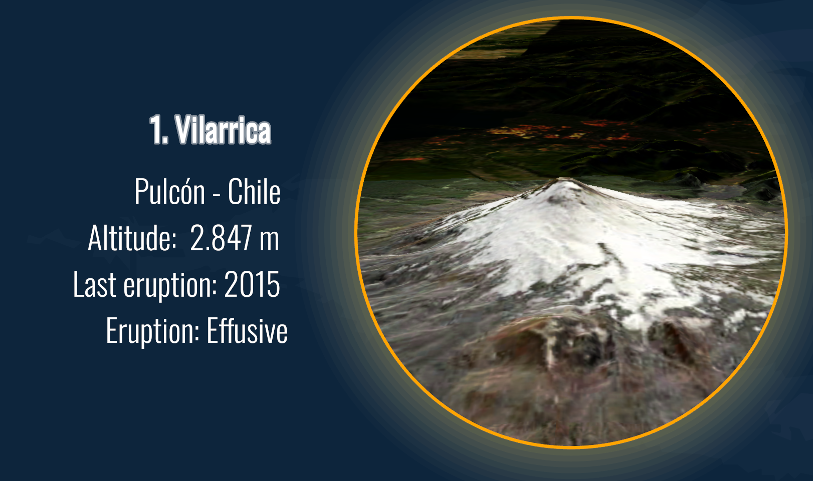
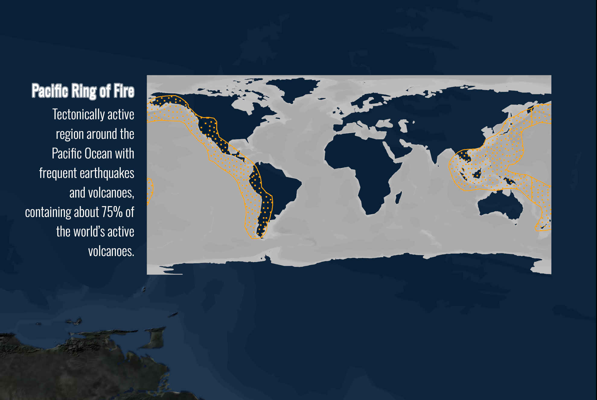

Os vulcões mais ativos da América do Sul
A Cordilheira dos Andes, que se estende ao longo da costa oeste da América do Sul, concentra uma grande quantidade de vulcões, incluindo alguns dos mais ativos do planeta. Essa intensa atividade vulcânica molda paisagens e destaca a região como uma das áreas geologicamente mais dinâmicas do mundo.

O mapa destaca alguns dos vulcões mais ativos da América do Sul: Villarrica, Llaima, Lascar, Ubinas e Sabancaya, selecionados com base em registros históricos de erupções, atividade recente e potencial de risco vulcânico. As informações foram compiladas a partir de bases de monitoramento científico, incluindo o Global Volcanism Program (Smithsonian Institution), o SERNAGEOMIN (Chile) e o Instituto Geofísico del Perú (IGP).
A formação desse vulcanismo está relacionada ao encontro entre placas tectônicas, onde a Placa de Nazca mergulha sob a Placa Sul-Americana. Esse movimento favoreceu a ascensão do magma e a formação dos vulcões ao longo da Cordilheira dos Andes, criando uma paisagem marcada por grandes altitudes, relevo acidentado e atividade geológica constante.
Especificações técnicas
O mapa foi desenvolvido a partir de Modelos Digitais de Elevação (MDE) disponíveis em bases públicas, utilizados para representação do relevo andino. A visualização foi construída no ambiente Local Scene do ArcGIS Pro, permitindo destacar individualmente cada vulcão em uma perspectiva tridimensional.
Foram geradas composições de relevo a partir do Modelo Digital de Elevação (MDE/DEM), incluindo produtos derivados como hillshade e slope. Também foram aplicadas técnicas de sobreposição entre camadas, utilizando modos de mesclagem (blend modes) como Multiply, Overlay e Soft Light, além de ajustes de transparência e iluminação.
Detalhes


